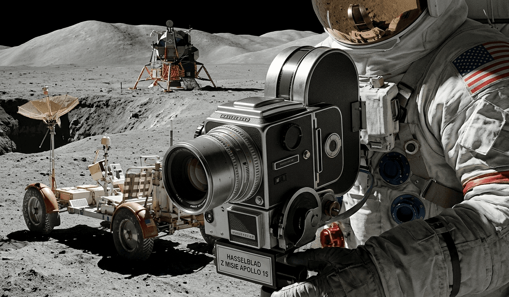

Predstavte si, že na povrchu Mesiaca leží dvanásť špičkových fotoaparátov. Sú tam už viac ako pol storočia, pokryté vesmírnym prachom, opustené ako najdrahší odpad v dejinách ľudstva. Existuje však jeden jediný exemplár, ktorý tento rozsudok smrti porazil. Strieborný Hasselblad z misie Apollo 15, ktorý sa stal najdrahším kúskom vesmírnej techniky, aký kedy držala súkromná ruka. Cena? 910 000 dolárov.
Toto nie je len kus kovu a skla. Je to jediný svedok, ktorý „videl“ Mesiac zblízka a vrátil sa, aby o tom rozprával.

Neľútostná rovnica NASA
V 60. rokoch mala NASA jasné pravidlo: váha je nepriateľ. Každý gram, ktorý sa vracal z Mesiaca, musel byť vyvážený mesačnými kameňmi. Astronauti dostali krutý príkaz – po odfotení posledných snímok vybrať zo zadnej časti kamier kazety s filmom a samotné telá fotoaparátov nechať na mesačnom povrchu. Malo to ušetriť presne 25 kilogramov váhy. Dodnes tam týchto „mŕtvol“ značky Hasselblad leží presne dvanásť.
Zázrak z misie Apollo 15
Kamera, ktorú používal astronaut James Irwin v roku 1971, mala však iný osud. Počas misie vyhotovila 299 úchvatných snímok, no pri návrate do lunárneho modulu sa niečo zmenilo. Či už išlo o technickú chybu, zaseknutie kazety alebo tiché rozhodnutie astronauta zachrániť svoj pracovný nástroj, tento konkrétny Hasselblad sa ako jediný dostal späť na palubu. Keď pristál v Tichom oceáne, stal sa z neho okamžite unikát, ktorý nemal existovať.
Dôkaz v každom zrnku prachu
Keď sa tento fotoaparát pred pár rokmi objavil na aukcii, zberatelia boli skeptickí. Ako dokázať, že skutočne bol na Mesiaci? Odpoveď bola ukrytá v detailoch. Kamera nesie sériové číslo 1038 a špeciálnu sklenenú platňu (Reseau plate), ktorá vytvárala na fotkách tie známe malé krížiky. Čo je však najdôležitejšie – vo vnútri mechanizmu sa našli mikročastice mesačného prachu. Je to „DNA“ vesmíru, ktorú žiadny falzifikátor nedokáže napodobniť.
Prečo stojí takmer milión dolárov?
V marci 2026 sa hodnota tohto Hasselbladu pohybuje na úrovni 910 000 $ (cca 840 000 €). Cena neodráža len značku, ale fakt, že ide o jediný „vrátený“ kus z povrchu iného sveta. Je to svätý grál pre každého milovníka vesmíru. Zatiaľ čo zvyšných dvanásť kamier pomaly podlieha radiácii v mesačnom mori Mare Imbrium, tento kus striebornej techniky pripomína éru, kedy ľudstvo kráčalo medzi hviezdami.
Imagine twelve top-tier cameras lying on the surface of the Moon. They have been there for over half a century, covered in cosmic dust, abandoned as some of the most expensive trash in human history. Yet, there is one solitary survivor that beat this death sentence. A silver Hasselblad from the Apollo 15 mission, which became the most expensive piece of space technology ever held in private hands. The price tag? $910,000.
This is not just a piece of metal and glass. It is the only witness that "saw" the Moon up close and returned to tell the tale.
NASA’s Ruthless Equation
In the 1960s, NASA had a strict rule: weight is the enemy. Every single gram returning from the Moon had to be offset by lunar rocks. Astronauts were given a brutal command—after snapping their final shots, they had to remove the film magazines from the back of the cameras and leave the camera bodies behind on the lunar surface. This was meant to save exactly 25 kilograms of weight. To this day, exactly twelve of these Hasselblad "corpses" still lie out there.
The Miracle of the Apollo 15 Mission
However, the camera used by astronaut James Irwin in 1971 shared a different fate. It captured 299 breathtaking images during the mission, but something changed when it was time to return to the lunar module. Whether it was a technical glitch, a jammed magazine, or a silent decision by the astronaut to save his work tool, this specific Hasselblad was the only one that made it back on board. When it splashed down in the Pacific Ocean, it instantly became a unique relic that wasn't supposed to exist.
Proof in Every Grain of Dust
When this camera surfaced at auction a few years ago, collectors were skeptical. How could anyone prove it had actually been to the Moon? The answer was hidden in the details. The camera bears serial number 1038 and features the special glass Reseau plate, which created those iconic small crosshairs on the photos. Most importantly, microparticles of lunar dust were found inside the mechanism. It is the cosmic "DNA" that no counterfeiter can ever replicate.
Why is it Worth Nearly a Million Dollars?
As of March 2026, the value of this Hasselblad hovers around $910,000 (approx. €840,000). The price reflects more than just the brand; it marks the fact that this is the only "returned" piece from the surface of another world. It is the ultimate holy grail for any space enthusiast. While the remaining twelve cameras slowly succumb to radiation in the lunar sea of Mare Imbrium, this piece of silver engineering stands as a reminder of an era when humanity walked among the stars.
Stellen Sie sich vor, auf der Mondoberfläche liegen zwölf Spitzenkameras. Sie befinden sich dort seit mehr als einem halben Jahrhundert, bedeckt mit kosmischem Staub, zurückgelassen als der teuerste Müll in der Geschichte der Menschheit. Es gibt jedoch ein einziges Exemplar, das dieses Todesurteil besiegt hat. Eine silberne Hasselblad aus der Apollo-15-Mission, die zum teuersten Stück Weltraumtechnologie wurde, das sich je in privater Hand befand. Der Preis? 910.000 Dollar.
Dies ist nicht nur ein Stück Metall und Glas. Es ist der einzige Zeuge, der den Mond aus nächster Nähe „gesehen“ hat und zurückgekehrt ist, um davon zu berichten.
Die gnadenlose Gleichung der NASA
In den 1960er Jahren hatte die NASA eine klare Regel: Gewicht ist der Feind. Jedes Gramm, das vom Mond zurückkehrte, musste durch Mondgestein ausgeglichen werden. Die Astronauten erhielten einen harten Befehl – nach den letzten Aufnahmen mussten sie die Filmmagazine von der Rückseite der Kameras abnehmen und die Kameragehäuse selbst auf der Mondoberfläche zurücklassen. Dies sollte genau 25 Kilogramm Gewicht einsparen. Bis heute liegen genau zwölf dieser Hasselblad-„Leichen“ dort drüben.
Das Wunder der Apollo-15-Mission
Die Kamera, die der Astronaut James Irwin 1971 benutzte, hatte jedoch ein anderes Schicksal. Während der Mission machte sie 299 atemberaubende Aufnahmen, doch bei der Rückkehr zum Mondmodul änderte sich etwas. Ob es sich um einen technischen Fehler, ein verklemmtes Magazin oder die stille Entscheidung des Astronauten handelte, sein Arbeitswerkzeug zu retten – diese spezifische Hasselblad war die einzige, die es zurück an Bord schaffte. Als sie im Pazifischen Ozean landete, wurde sie sofort zu einem Unikat, das es eigentlich gar nicht geben durfte.
Der Beweis in jedem Staubkorn
Als diese Kamera vor einigen Jahren bei einer Auktion auftauchte, waren Sammler skeptisch. Wie sollte man beweisen, dass sie wirklich auf dem Mond war? Die Antwort lag im Detail. Die Kamera trägt die Seriennummer 1038 und verfügt über eine spezielle Glasplatte (Reseau-Platte), die jene bekannten kleinen Kreuze auf den Fotos erzeugte. Was jedoch am wichtigsten ist: Im Inneren des Mechanismus wurden Mikropartikel von Mondstaub gefunden. Es ist die „DNA“ des Weltraums, die kein Fälscher jemals kopieren kann.
Warum ist sie fast eine Million Dollar wert?
Im März 2026 bewegt sich der Wert dieser Hasselblad auf einem Niveau von 910.000 $ (ca. 840.000 €). Der Preis spiegelt nicht nur die Marke wider, sondern die Tatsache, dass es sich um das einzige „zurückgekehrte“ Stück von der Oberfläche einer anderen Welt handelt. Sie ist der heilige Gral für jeden Weltraumliebhaber. Während die verbleibenden zwölf Kameras im Mondmeer Mare Imbrium langsam der Strahlung erliegen, erinnert dieses Stück silberner Technik an eine Ära, in der die Menschheit zwischen den Sternen wandelte.